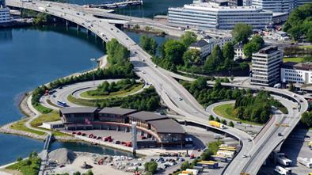
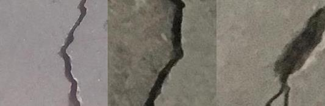
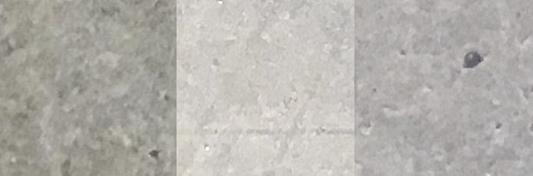
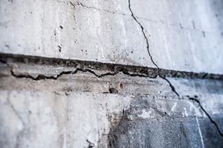
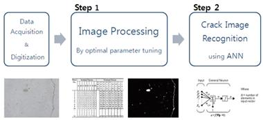
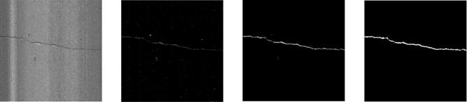
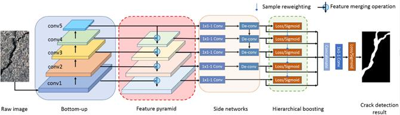
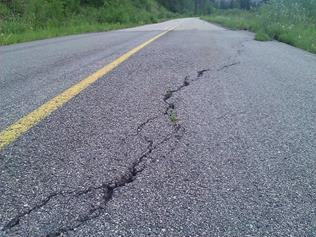

Data publicării: 20.01.2020
Autor articol: Adrian Iftene
Introducere
Odată cu dezvoltarea exponențială a infrastructurii urbane, aceasta a devenit din ce în ce mai mare, astfel încât inspecția umană la fața locului pentru a detecta probleme devine o activitate din ce în ce mai grea și o mare consumatoare de timp (vezi Figura 1). În același timp, activitatea este obositoare și subiectivă, implicând tehnicieni umani care examinează pe parcursul inspecției anomaliile și identifică fisurile, bazându-se pe experiența lor anterioară. Detectarea timpurie a acestor fisuri este primordială, deoarece acestea se degradează foarte repede și intervenția rapidă ar ajuta la stoparea rapidă a acestui proces distrugător.

Devine necesară folosirea unor soluții inteligente, pe deoparte pentru a îmbunătăți performanțele umane, iar pe de altă parte pentru a automatiza procesul de detectare a fisurilor. Se pot folosi dispozitive care sunt capabile să parcurgă distanțe lungi și uneori zone greu accesibile (de exemplu, drone) și să detecteze fisuri și imperfecțiuni pe șosele și drumuri de beton, pe trotuare, pe clădiri, pe conducte industriale, etc. În Figura 2, se pot observa crăpăturile apărute la nivelul șoselei, al clădirii sau al țevei industriale.
Unele mari avantaje ale acestor soluții automatizate sunt reducerea costurilor de întreținere și posibilitatea de a inspecta locuri greu accesibile, cum ar fi sub poduri și pe clădirile înalte. Acestea ar putea fi controlate de la distanță, reducând masiv riscul de rănire a omului care se ocupă cu inspecția fisurilor. În Figura 3 putem vedea cum inspecția se poate face foarte ușor cu ajutorul unei drone ce are montată o cameră video și care poate fi controlată de pe o tabletă.
Pentru o analiză rapidă și fiabilă a defectelor de suprafață, detectarea automată a fisurilor trebuie dezvoltată în locul procedurilor de inspecție umană tradiționale mai lente, subiective, care s-a dovedit a fi consumatoare de timp și costisitoare.
Colecții de date
Există mai multe colecții de date disponibile pentru cei ce doresc să construiască aplicații care vor să identifice automat crăpăturile. Amintim aici colecția prezentată în lucrarea (Özgenel și Gönenç Sorguç, 2018), care conține imagini cu fisuri. Datele au fost colectate din diverse clădiri ale campusului METU. Setul de date este împărțit în două clase: imagini cu fisuri și imagini fără fisuri pentru clasificarea imaginilor.
Fiecare clasă are 20.000 de imagini cu un număr total de 40.000 de imagini de dimensiune 227 x 227 pixeli cu canale RGB. Exemple din fiecare clasă sunt prezentate mai jos în figurile 4 și 5.


Tehnici bazate pe inteligență artificială folosite în detectarea crăpăturilor
Mulți cercetători au fost preocupați de problema detectării fisurilor. Deși timp îndelungat, inspecția manuală a fost metoda apreciată pentru identificarea fisurilor, dar în ultimii ani, tot mai multe soluții automatizate au ieșit la iveală.
Majoritatea acestor soluții implică utilizarea rețelelor neuronale și a modelelor care trebuie instruite folosind un set de dimensiuni mari de imagini. În abordările anterioare, analiza se face, de obicei, luând în considerare tehnicile de procesare a imaginii, nivelul de precizie, nivelul de eroare și, evident, setul de date în sine.
Pentru a achiziționa datele s-au folosit camere video performante (CCTV), scanere laser (Chae și Abraham, 2001) și microunde (Khanfar et al., 2003). După etapa de achiziționare a imaginilor prin diverse metode, urmează etapa de procesare a acestora și de identificare a anomaliilor. Pentru acest pas au fost propuse o varietate de metode de prelucrare: prelucrarea imaginii folosind tehnica de detectare a marginilor (Adbel-Quader et al., 2003), potrivirea histogramelor, filtrarea imaginilor și detectarea modificărilor (Guo et al., 2009) și metoda automată bazate pe praguri – o versiune revizuită a metodei Otsu pentru detectarea defectelor de la cele mici până la cele mari (Ng, 2006). (Sinha et al., 2006) au folosit o rețea neuro-fuzzy, iar (Khanfar et al., 2003) a detectat defectele structurii de beton prin tehnici de logică fuzzy. Pe lângă aceste metode, au fost utilizate rețele neuronale și algoritmi genetici.
Structuri de beton
Stabilitatea și calitatea structurii în cazul clădirilor din beton este un factor important atât în faza de construcție, cât și în faza de întreținere (Zheng, 2014). Importanța calității structurii este crescută pe măsură ce sunt construite clădiri înalte, poduri lungi și clădiri asimetrice. Din acest motiv, a apărut sistemul de management al siguranței construcțiilor, acesta fiind în curs de dezvoltare în zilele noastre. În plus, a crescut interesul pentru automatizarea tuturor proceselor ce țin de sistemului de management al construcțiilor, iar evaluările periodice sunt necesare pentru a garanta continuu calitatea serviciilor.
În structurile de beton, una dintre modalitățile de evaluare a sănătății structurale este examinarea unei fisuri pe suprafața structurii. Întrucât starea unei structuri de beton poate fi identificată cu ușurință și direct prin inspecția fisurii de suprafață, evaluarea fisurilor trebuie efectuată în mod regulat pentru a asigura durabilitatea și siguranța în ciclul său de viață.

În lucrarea (Moon și Kim, 2011), autorii au propus un algoritm, care este compus din două părți: procesarea imaginilor și clasificarea imaginilor (vezi Figura 7). În prima etapă, fisurile se disting de imaginea de fundal folosind cu ușurință filtrarea, o metodă de reducere îmbunătățită și operații morfologice. De asemenea, sunt extrase date particulare, cum ar fi numărul de pixeli și raportul dintre axa principală și axa secundară pentru zona de pixeli conectată. În a doua etapă, se identifică existența fisurilor. Rețeaua neuronală cu propagare înapoi este utilizată pentru automatizarea clasificării imaginilor. Valorile antrenament ale procesului de instruire au fost clasificate manual de experți. Pentru a verifica primul și al doilea pas al algoritmului propus, algoritmul a fost testat folosind imagini reale de suprafață ale podului de beton. Rețeaua neuronală cu propagare înapoi a fost instruită folosind 105 imagini cu structură de beton, iar rețeaua obținută a fost testată pe 120 de imagini noi. Rata de recunoaștere a imaginilor cu fisuri a fost de 90%, iar recunoașterea imaginilor fără crăpături a fost de 92%. Această metodă este utilă pentru inspectorii începători, care nu au o experiență foarte mare, permițându-le să efectueze în mod eficient sarcini de identificare a fisurilor.

Trotuare
Metodele tradiționale de detectare a fisurilor de pe trotuar nu pot face față bine complexității și diversității zgomotelor posibile care pot apare în imaginile cu trotuare. Pentru a rezolva această problemă, (Xu et al., 2013) au propus o abordare nesupervizată de detecție a fisurilor bazată pe caracteristicile proeminente și pe cele statistice. Proeminența este reprezentată inițial de o hartă de vizibilitate construită din diferențele de intensitate și de contrast local ale regiunilor din imagine. Apoi, continuitatea spațială a pixelilor din fișierele candidat este măsurată pe baza caracteristicilor statistice extrase din vecinătatea lor. Acest proces este mai urmat de folosirea unui model Bayesian pentru actualizarea automată a proeminențelor din imagine. În cele din urmă, fisurile sunt extrase după binarizarea adaptativă a imaginii. Experimentele realizate de autori au arătat că metoda propusă de ei a generat rezultate foarte bune, apropiate ca și calitate de cele ale inspecției vizuale umane. Rezultatele au dovedit, de asemenea, eficacitatea metodei propuse în eliminarea zgomotelor în comparație cu mai multe metode similare. În Figura 8 putem observa etapele și transformările prin care trece o imagine inițială.

În prezent tehnicile propuse folosesc rețele neuronale și mai multe tipuri de transformări, care au ca scop îmbunătățirea calității soluțiilor (Yang et al., 2019) (vezi Figura 9 de mai jos). Oricum din cauza complexității problemei și din cauza zgomotelor care apar în imagini momentan precizia de detectare este în jur de 60% (Yang et al., 2019).

Străzi și autostrăzi
În lucrarea (Navaneetha et al., 2014), autorii au propus o soluție pentru detectarea și caracterizarea fisurilor stradale, care limitează implicarea umană. Pe acest tip de imagini, au folosit transformarea Hough pentru detectarea fisurilor și au folosit o abordarea supervizată pentru caracterizarea fisurii, care se bazează în principal pe tehnica de evaluare în bloc a fotografiei.
Autorii din (Patil Amit et al., 2014) au oferit o abordare bazată pe logica fuzzy pentru detectarea fisurilor, bazată pe o verificare non-distructivă. Ei au folosit frecvența naturală a fisurilor dintr-un fascicul ca o intrare din logica fuzzy. Rezultatele procesării ofereau la final intensitatea fisurii și poziția relativă a fisurii în imagine.

În (Panella et al., 2018) autorii folosesc tehnici de inteligență artificială bazate pe învățare automată și pe rețele neuronale pentru a identifica defectele din șoselele care trec prin tuneluri. În (Fakhri et al., 2019) autorii aduc în discuție problema siguranței în trafic și de aici nevoia procesării în timp real a imaginilor preluate de camerele video. Ei folosesc filtre Gaussiene pentru o procesare rapidă a imaginilor, iar mai apoi metode de tip random forest pentru clasificarea acestora.
Concluzii
Detectarea automată a crăpăturilor folosind algoritmi de inteligență artificială este o problemă de actualitate, care-și propune să înlocuiască munca repetitivă a oamenilor cu algoritmi de procesare automată a imaginilor. Tehnicile existente folosesc într-o primă etapă transformări ale imaginilor pentru a îmbunătăți calitatea rezultatelor. Amintim aici transformările Gaussiene și aplicarea de filtre de tot tipul care transformă imaginea color în imagine alb-negru. Mai apoi algoritmii de inteligență artificială ce folosesc colecții mari de imagini, clasifică imaginea procesată, precizând dacă avem sau nu crăpături în imagine. Aici amintim rețelele neuronale, algoritmii de clasificare de tip random forest, algoritmi bazați pe logica fuzzy, etc.
Momentan calitatea algoritmilor este acceptabilă, dar prevedem ca în perioada următoare o să avem o explozie a abordărilor existente, care vor duce la îmbunătățirea rezultatelor actuale. De asemenea, e nevoie de o viteză mai mare a întregului proces de clasificare, pentru a putea folosi rezultatele în industria de mașini de exemplu.
Referințe bibliografice
- Adbel-Qader, I., Abudayyeh, O., Kelly, M. (2003) Analysis of edge-detection techniques for crack identification in bridges. Journal of Computing in Civil Engineering, Vol. 17(4), pp. 255, 2003.
- Chae, M., Abraham, D. (2001) Neuro-fuzzy approaches for sanitary sewer pipeline condition assessment. Journal of Computing in Civil Engineering, Vol. 15(1), pp. 4.
- Fakhri, S. A., Fakhri, S. A., Saadatseresht, M. (2019) Road crack detection using gaussian/prewitt filter. The International Archives of the Photogrammetry, Remote Sensing and Spatial Information Sciences, Volume XLII-4/W18, 2019, GeoSpatial Conference 2019 – Joint Conferences of SMPR and GI Research, 12–14 October 2019, Karaj, Iran, 371-377.
- Guo, W., Soibelman, L., Garrett Jr, J. (2009) Automated defect detection for sewer pipeline inspection and condition assessment. Automation in Construction, Vol. 18(5), pp. 587-596, 2009.
- Khanfar, A., Abu-Khousa, M., Qaddoumi, N. (2003) Microwave near-field nondestructive detection and characterization of disbonds in concrete structures using fuzzy logic techniques. Composite Structures, Vol. 62(3), pp. 335-339.
- Moon, H. G., Kim, J. H. (2011) Intelligent crack detecting algorithm on the concrete crack image using neural network. Paper presented at 28th International Symposium on Automation and Robotics in Construction, ISARC 2011, Seoul, Korea, Republic of, 1461-1467.
- Navaneetha, D. V., Kammar, A., Sowmyashree, B. (2014) Hough Transforms to Detect and Classify Road cracks. International Journal of Engineering Research and Technology (IJERT) Vol. 3, Issue 6, June-2014.
- Ng, H. (2006) Automatic thresholding for defect detection. Pattern Recognition Letters, Vol. 27(14), pp. 1644-1649.
- Özgenel, Ç. F., Gönenç Sorguç, A. (2018) Performance Comparison of Pretrained Convolutional Neural Networks on Crack Detection in Buildings. ISARC 2018, Berlin.
- Panella, F., Boehm, J., Loo, Y., Kaushik, A., Gonzalez, D. (2018) Deep learning and image processing for automated crack detection and defect measurement in underground structures. The International Archives of the Photogrammetry, Remote Sensing and Spatial Information Sciences, Volume XLII-2, 2018, ISPRS TC II Mid-term Symposium “Towards Photogrammetry 2020”, 4–7 June 2018, Riva del Garda, Italy, 829-835.
- Patil Amit, V., Pathak, M., Sharma, P. K. (2014) Review of Numerical Solution to the Detection of Crack in Structure by using Fuzzy Logic. International Journal of Advance Research in Science And Engineering (IJARSE), Vol. 3, Issue 8, August 2014.
- Sinha, S., Fieguth, P. (2006) Neuro-fuzzy network for the classification of buried pipe defects. Automation in Construction, Vol. 15(1), pp. 73-83, 2006.
- Xu, W., Tang, Z., Zhou, J., Ding, J. (2013) Pavement crack detection based on saliency and statistical features. 2013 IEEE International Conference on Image Processing, ICIP 2013, pp. 4093-4097. DOI: 10.1109/ICIP.2013.6738843
- Yang, F., Zhang, L., Yu, S., Prokhorov, D., Mei, X., Ling, H. (2019) Feature Pyramid and Hierarchical Boosting Network for Pavement Crack Detection. IEEE Transactions on intelligent transportation systems. arXiv:1901.06340v2
- Zheng, P. (2014) Crack Detection and Measurement Utilizing Image-Based Reconstruction. Project and Report. VT Virginia Tech. http://vtechworks.lib.vt.edu/handle/10919/48963